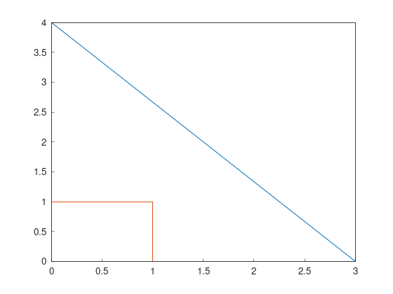

Part 1: Basic types
All the tutorials assume Fields2Cover library and iostream are included as:
#include "fields2cover.h"
#include <iostream>
import fields2cover as f2c
Initialize a F2CPoint
Points are the most basic type. There are many ways to initialize a F2CPoint (f2c::types::Point)
Using x and y coordinates
F2CPoint p1 (1.2, 3.4); std::cout << "Point 1: " << p1 << std::endl;p1 = f2c.Point(1.2, 3.4) print("Point 1: ", p1)Point 1: Point(1.2, 3.4, 0)
Using x, y and z coordinates
F2CPoint p2 (9.8, 7.6, 5.4); std::cout << "Point 2: " << p2 << std::endl;p2 = f2c.Point(9.8, 7.6, 5.4); print("Point 2: ", p2);Point 2: Point(9.8, 7.6, 5.4)
Using
OGRPointfrom GDAL
F2CPoint p3 (OGRPoint(11, 22)); std::cout << "Point 3: " << p3 << std::endl;from osgeo import ogr ogrpoint = ogr.Geometry(ogr.wkbPoint) ogrpoint.AddPoint(11, 22) p3 = f2c.Point() p3.importFromWkt(ogrpoint.ExportToWkt()) print("Point 3: ", p3)Point 3: Point(11, 22, 0)
Creating an empty
F2CPointand setting its components usingsetX/setY/setZ. The components can be also read withgetX/getY/getZ.
F2CPoint p4; p4.setX(3.0); p4.setZ(-1.0); std::cout << "Point 4: " << p4; std::cout << ". Its components are: {x: " << p4.getX(); std::cout << ", y: " << p4.getY(); std::cout << ", z: " << p4.getZ() << "}\n";p4 = f2c.Point() p4.setX(3.0); p4.setZ(-1.0); print("Point 4: ", p4, ". Its components are: {x: ", p4.getX(), ", y: ", p4.getY(), ", z: ", p4.getZ(), "}")Point 4: Point(3, 0, -1). Its components are: {x: 3, y: 0, z: -1}
Creating an empty
F2CPointand importing its components.
F2CPoint p5; p5.importFromWkt("POINT (0 4 4)"); std::cout << "Point 5: " << p5 << std::endl;p5 = f2c.Point() p5.importFromWkt("POINT (0 4 4)") print("Point 5: ", p5)Point 5: Point(0, 4, 4)
Initialize a F2CLineString
A F2CLineString (f2c::types::LineString) is a line defined by a vector of points. To initialize a F2CLineString, we can:
Create an empty
F2CLineStringand adding severalF2CPoint:
F2CLineString line1; line1.addPoint(3, 0); line1.addPoint(p5); // Point(0, 4) std::cout << "Length of line 1: " << line1.length() << std::endl;line1 = f2c.LineString() line1.addPoint(3,0) line1.addPoint(p5) print("Length of line 1: ", line1.length())Length of line 1: 5
Give a sequence of
F2CPoint:
F2CLineString line2({F2CPoint(1, 0), F2CPoint(1, 1), F2CPoint(0, 1)}); std::cout << "Length of line 2: " << line2.length() << std::endl;line2 = f2c.LineString(); [line2.addPoint(p) for p in [f2c.Point(1, 0), f2c.Point(1, 1), f2c.Point(0, 1)]]; print("Length of line 2: ", line2.length());Length of line 2: 2
Initialize a F2CLinearRing
A F2CLinearRing (f2c::types::LinearRing) is a closed F2CLineString.
It can be initialized as a F2CLineString:
F2CLinearRing ring{F2CPoint(1,1), F2CPoint(1,2), F2CPoint(2,2), F2CPoint(1,1)};
std::cout << "Area of the ring: " << ring.area() << std::endl;
ring = f2c.LinearRing();
[ring.addPoint(p) for p in [f2c.Point(1,1), f2c.Point(1,2), f2c.Point(2,2), f2c.Point(1,1)]];
print("Area of the ring: ", ring.area())
Area of the ring: 0.5
The main difference between F2CLineString and F2CLinearRing is that F2CLinearRing is expected to be closed, so the area can be computed.
Initializing other collections
A F2CMultiLineString (f2c::types::MultiLineString) are several F2CLineString. It can be initialize as:
F2CMultiLineString lines;
lines.addGeometry(line1);
lines.addGeometry(line2);
std::cout << "Lines have length: ";
for (auto line : lines) {
std::cout << line.length() << ", ";
}
std::cout << std::endl;
lines = f2c.MultiLineString();
lines.addGeometry(line1);
lines.addGeometry(line2);
print("Lines have length: ", end="")
for i in range(lines.size()):
print(lines.getGeometry(i).length(), end = ", ")
print("\n")
Lines have length: 5, 2,
A F2CCell (f2c::types::Cell) is a polygon created by one outter F2CLinearRing and zero, one or many inner F2CLinearRing.
The first F2CLinearRing is the outter one.
Moreover, all the F2CLinearRing should not intersect with each others.
F2CLinearRing outter_ring{
F2CPoint(0, 0), F2CPoint(2, 0),F2CPoint(2, 2), F2CPoint(0, 2), F2CPoint(0, 0)};
F2CLinearRing inner_ring{
F2CPoint(0.5, 0.5), F2CPoint(1.5, 0.5), F2CPoint(1.5, 1.5),
F2CPoint(0.5, 1.5), F2CPoint(0.5, 0.5)};
F2CCell cell;
cell.addRing(outter_ring);
cell.addRing(inner_ring);
std::cout << "The area of the cell is: " << cell.area() << std::endl;
outter_ring = f2c.LinearRing();
[outter_ring.addGeometry(p) for p in [ \
f2c.Point(0, 0), f2c.Point(2, 0), f2c.Point(2, 2), f2c.Point(0, 2), f2c.Point(0, 0)]];
inner_ring = f2c.LinearRing();
[inner_ring.addGeometry(p) for p in [ \
f2c.Point(0.5, 0.5), f2c.Point(1.5, 0.5), f2c.Point(1.5, 1.5), \
f2c.Point(0.5, 1.5), f2c.Point(0.5, 0.5)]];
cell = f2c.Cell();
cell.addRing(outter_ring);
cell.addRing(inner_ring);
print("The area of the cell is: ", cell.area(), "\n");
The area of the cell is: 3
A F2CCells (f2c::types::Cells) is a multipolygon. It contains zero, one or several F2CCell on it.
F2CCells cells;
cells.addGeometry(cell);
std::cout << "The area of the cells is: " << cells.area() << std::endl;
cells = f2c.Cells();
cells.addGeometry(cell);
print("The area of the cells is: ", cells.area(), "\n\n")
The area of the cells is: 3
Lastly, F2CMultiPoint (f2c::types::MultiPoint) is a collection of F2CPoint
F2CMultiPoint points {F2CPoint(1, 2), F2CPoint(3, 4)};
std::cout << "Points contains " << points.size() << " points." << std::endl;
points.addPoint(5, 6);
std::cout << "Points contains " << points.size() << " points." << std::endl;
points.addPoint(p5);
std::cout << "Points contains " << points.size() << " points." << std::endl;
points = f2c.MultiPoint();
[points.addGeometry(p) for p in [f2c.Point(1, 2), f2c.Point(3, 4)]];
print("Points contains ", points.size(), " points.");
points.addPoint(5, 6);
print("Points contains ", points.size(), " points.");
points.addPoint(p5);
print("Points contains ", points.size(), " points.");
Accessing elements in collections
To access each of the elements in a collection, the function getGeometry(int n) returns the element n.
F2CPoint p_0 = points.getGeometry(0);
std::cout << "First point in points: " << p_0 << std::endl;
p_0 = points.getGeometry(0);
print("First point in points: ", p_0, "\n")
First point in points: Point(1, 2, 0)
Unfortunately, if we change the child element, it is not changed on the collection.
If we want to keep it, we have to set the geometry back with setGeometry()
p_0 *= 1e5;
std::cout << "Modified p_0: " << p_0 << std::endl;
std::cout << "First point in points without modification: " << points.getGeometry(0) << std::endl;
points.setGeometry(0, p_0);
std::cout << "Modified first point in points: " << points.getGeometry(0) << std::endl;
p_0 *= 1e5;
print("Modified p_0: ", p_0);
print("First point in points without modification: ", points.getGeometry(0));
points.setGeometry(0, p_0);
print("Modified first point in points: ", points.getGeometry(0));
This process can be done in any of the collection types presented previously:
F2CLineString, F2CLinearRing, F2CMultiLineString, F2CCell, F2CCells and F2CMultiPoint
F2CRobot
The vehicle to cover the field is defined as a F2CRobot struct.
To initialize it, the constructor needs the width of the robot and the width of the operation.
For example, if we have a vehicle to fertilize a field, with 3m width and a 39m operational width, we should initialize it as:
F2CRobot robot (3.0, 39.0);
robot = f2c.Robot(3.0, 39.0);
Important functions of F2CRobot are:
getWidth/setWidth: get/set the width of the robot. If something is closer than this value from the robot, we can expect it will be hit.
getCovWidth/setCovWidth: get/set the coverage width of the robot, also called operational width. This parameter defines the width of the swaths in the field.
getMinTurningRadius/setMinTurningRadius and getMaxCurv/setMaxCurv: get/set the minimum turning radius or the maximum curvature, respectively. Both are saved as the same parameter, as maximum curvature is the inverse of the minimum turning radius.
getMaxDiffCurv/setMaxDiffCurv: get/set the maximum linear change of the curvature.
getCruiseVel/setCruiseVel: get/set the speed of the vehicle when traveling through the field.
getTurnVel/setTurnVel: get/set the speed of the vehicle when making turns or going through the headlands.
F2CSwath, F2CSwaths and F2CSwathsByCells
A swath, or AB line, is the path that uses an agricultural vehicle to cross the field. On Precision Agriculture, swaths are fixed.
Swaths are coded in the Fields2Cover library as F2CSwath.
A F2CSwath is defined by a F2CLineString, which defines the path of the swath, and the width of the swath.
F2CSwaths is a collection of F2CSwath. F2CSwaths groups all the F2CSwath on a F2CCell.
F2CSwathsByCells collects the F2CSwaths for each F2CCell in a F2CCells.
F2CRoute
A F2CRoute defines a route, as a sequence of std::vector<F2CSwaths> and std::vector<F2CMultiPoint>.
The order of the sequence is:
- First, follow the first F2CMultiPoint. If it doesn’t contain any point, skip it.
- Then, cover the first F2CSwaths in order, going from the end of each swath to the start of the next one, until all of them are covered.
- Use the next F2CMultiPoint to go from the end of the last F2CSwaths covered until the start of the next F2CSwaths, if any. If there is any F2CSwaths left, the F2CMultiPoint goes to the end of the route. If F2CMultiPoint is empty, skip it.
- Follow the last two steps until all F2CSwaths are covered.
Fortunately, this class handles this behaviour with functions like addSwaths and addConection, so we do not have to worry about it.
A F2CRoute is not a path because it doesn’t have the turns or the velocities the vehicle needs to follow it.
F2CPath
Lastly, F2CPath defines a coverage path by a vector of the point, angle, length and velocity of each step. It also provides information about the direction and if it is traversing through the mainland or not.
Visualizing Fields2Cover data
To visualize Fields2Cover data, the library provides the class f2c::Visualizer to easily plot our results.
First, we need to create our figure as:
f2c::Visualizer::figure();
f2c.Visualizer.figure();
Then, we can draw our data as:
f2c::Visualizer::plot(lines);
f2c.Visualizer.plot(lines);
Finally, the data is plotted as:
f2c::Visualizer::show();
f2c.Visualizer.show();
or saved as:
f2c::Visualizer::save("Tutorial_image.png");
f2c.Visualizer.save("Tutorial_image.png");
Note
Remember to add the extension to your images (.png)
The result should be this image:
